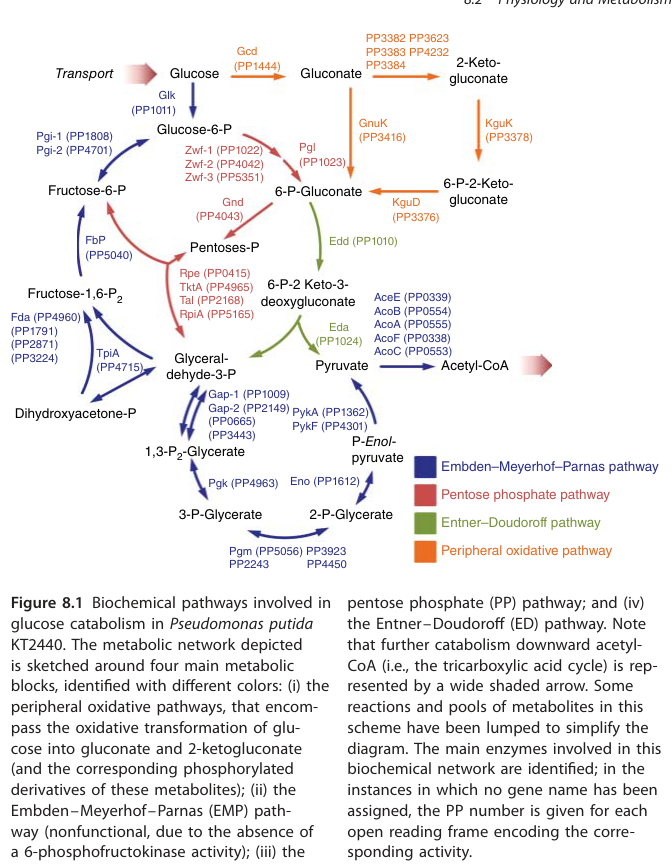

Phosphoglycerate kinase (PGK; EC 2.7.2.3) is a conserved cytosolic enzyme of central carbon metabolism that catalyzes the reversible, Mg2+-dependent transfer of a phosphoryl group between 1,3-bisphosphoglycerate and ADP, yielding 3-phosphoglycerate and ATP. It is a two-domain hinge-bending enzyme in which the N-terminal domain binds the phosphoglycerate substrate and the C-terminal domain binds the adenine nucleotide; catalysis requires large domain closure to bring the two substrates into proximity. In the glycolytic direction the enzyme performs substrate-level phosphorylation to generate ATP, and in the gluconeogenic direction it runs in reverse to regenerate 1,3-bisphosphoglycerate. In Pseudomonas putida KT2440, where the classical Embden-Meyerhof-Parnas pathway is incomplete in the forward glycolytic direction (the organism lacks 6-phosphofructokinase) and glucose catabolism proceeds mainly via periplasmic oxidation and the Entner-Doudoroff pathway, Pgk operates in the lower segment of central carbon metabolism, contributing to gluconeogenesis and to glycolytic ATP generation from triose phosphates.
| GO Term | Evidence | Action | Reason |
|---|---|---|---|
|
GO:0004618
phosphoglycerate kinase activity
|
IEA
GO_REF:0000120 |
ACCEPT |
Summary: Core molecular function. The enzyme is a member of the phosphoglycerate kinase family (Pfam PF00162; IPR001576) carrying EC 2.7.2.3 and the RHEA:14801 reaction, mapped via UniRule and InterPro2GO. This is the defining catalytic activity of the protein.
|
|
GO:0005524
ATP binding
|
IEA
GO_REF:0000118 |
ACCEPT |
Summary: PGK binds and produces/consumes ATP as part of its catalytic cycle; the C-terminal domain forms the adenine-nucleotide binding site. ATP binding is a well-supported supporting molecular function for this enzyme.
|
|
GO:0005737
cytoplasm
|
IEA
GO_REF:0000120 |
KEEP AS NON CORE |
Summary: PGK is a soluble cytosolic enzyme of central carbon metabolism, consistent with the UniProt subcellular location prediction. The more specific term cytosol (GO:0005829) is also annotated and is preferable.
|
|
GO:0005829
cytosol
|
IEA
GO_REF:0000118 |
ACCEPT |
Summary: Appropriate, more specific cytosolic localization for this soluble glycolytic/gluconeogenic enzyme. Consistent with pathway placement in the central carbon network; no experimental localization assay for the P. putida ortholog, but the inference is sound for a PGK-family enzyme.
|
|
GO:0006094
gluconeogenesis
|
IEA
GO_REF:0000118 |
ACCEPT |
Summary: PGK catalyzes a reversible reaction shared by glycolysis and gluconeogenesis. In P. putida KT2440, where forward EMP glycolysis is incomplete (no Pfk), the gluconeogenic direction is biologically important, making this an accurate process annotation.
|
|
GO:0006096
glycolytic process
|
IEA
GO_REF:0000120 |
ACCEPT |
Summary: PGK performs the 1,3-bisphosphoglycerate to 3-phosphoglycerate step of glycolysis (UniPathway UPA00109), generating ATP by substrate-level phosphorylation. Standard and correct process annotation for this enzyme.
|
|
GO:0043531
ADP binding
|
IEA
GO_REF:0000118 |
ACCEPT |
Summary: ADP is a substrate/product of the PGK reaction and binds in the C-terminal nucleotide-binding domain. Well-supported supporting molecular function consistent with the catalyzed reaction.
|
The research report should be a detailed narrative explaining the function, biological processes, and localization of the gene product. Citations should be given for all claims.
You should prioritize authoritative reviews and primary scientific literature when conducting research. You can supplement
this with annotations you find in gene/protein databases, but these can be outdated or inaccurate.
We are specifically interested in the primary function of the gene - for enzymes, what reaction is catalyzed, and what is the substrate specificity? For transporters, what is the substrate? For structural proteins or adapters, what is the broader structural role? For signaling molecules, what is the role in the pathway.
We are interested in where in or outside the cell the gene product carries out its function.
We are also interested in the signaling or biochemical pathways in which the gene functions. We are less interested in broad pleiotropic effects, except where these elucidate the precise role.
Include evidence where possible. We are interested in both experimental evidence as well as inference from structure, evolution, or bioinformatic analysis. Precise studies should be prioritized over high-throughput, where available.
The target gene symbol pgk in Pseudomonas putida KT2440 is explicitly annotated as phosphoglycerate kinase with locus tag PP_4963 in a KT2440 central carbon metabolism map, matching the provided UniProt identity (Q88D64; PGK family). Pgk is placed at the 1,3-bisphosphoglycerate ↔ 3-phosphoglycerate step (canonical PGK step) in the pathway diagram for KT2440. (poblete‐castro2017hostorganismpseudomonas pages 1-3, poblete‐castro2017hostorganismpseudomonas media daeb7766)
Phosphoglycerate kinase (PGK; EC 2.7.2.3) is a conserved, typically ~45 kDa enzyme that catalyzes a reversible phosphoryl-transfer reaction between the triose-derived acyl-phosphate metabolite 1,3-bisphosphoglycerate (1,3-BPG) and ADP:
In the glycolytic direction, PGK performs substrate-level phosphorylation to produce ATP. In the gluconeogenic direction, it runs in reverse to generate 1,3-BPG for upstream biosynthesis. (serimbetov2018thestructureand pages 56-63, rojaspirela2020phosphoglyceratekinasestructural pages 4-5)
Across organisms, the canonical PGK reaction couples adenine nucleotide (ADP/ATP) chemistry with the phosphorylated glycerate intermediates 1,3-BPG/3-PG. The available KT2440-focused excerpts do not report organism-specific deviations in substrate specificity for Pgk (PP_4963); thus, functional annotation is best supported by strong family conservation and the pathway placement of Pgk at the 1,3-BPG ↔ 3-PG step. (poblete‐castro2017hostorganismpseudomonas pages 1-3, poblete‐castro2017hostorganismpseudomonas media daeb7766, rojaspirela2020phosphoglyceratekinasestructural pages 4-5)
PGK is a classic two-domain hinge-bending enzyme:
These properties provide a mechanistic basis for functional inference for Pgk (PP_4963) in P. putida KT2440.
A key systems-level fact in KT2440 is that the classical Embden–Meyerhof–Parnas (EMP) glycolytic route is incomplete in the forward glycolytic direction because KT2440 lacks 6-phosphofructokinase (Pfk), rendering the EMP glycolytic pathway nonfunctional as a full glucose-to-pyruvate route. (poblete‐castro2017hostorganismpseudomonas pages 1-3)
Accordingly, KT2440 glucose catabolism heavily relies on:
- Peripheral periplasmic oxidation (e.g., glucose → gluconate; gluconate → 2-ketogluconate), and
- Entner–Doudoroff (ED) and pentose phosphate (PP) pathway connections. (poblete‐castro2017hostorganismpseudomonas pages 1-3, chen2024gnurrepressesthe pages 1-3)
Within this architecture, Pgk (PP_4963) is still present and positioned in the lower part of the EMP / gluconeogenesis module at the 1,3-BPG ↔ 3-PG step (Figure evidence). (poblete‐castro2017hostorganismpseudomonas pages 1-3, poblete‐castro2017hostorganismpseudomonas media daeb7766)
Given its reaction, Pgk contributes to:
- Energy metabolism via substrate-level phosphorylation (ATP generation when operating in the glycolytic direction) and
- Gluconeogenic biosynthesis via reverse flux to produce 1,3-BPG when building upper glycolytic intermediates. (serimbetov2018thestructureand pages 56-63, rojaspirela2020phosphoglyceratekinasestructural pages 4-5)
In KT2440 specifically, because glucose flux preferentially enters via periplasmic oxidation and ED (and EMP is incomplete in the forward direction), Pgk’s physiological importance is best viewed as supporting lower-glycolysis segment function, energy balance, and gluconeogenic flux rather than supporting a full canonical EMP glycolysis. (poblete‐castro2017hostorganismpseudomonas pages 1-3, chen2024gnurrepressesthe pages 1-3)
Pgk is depicted as part of the intracellular central carbon network (lower glycolysis/gluconeogenesis) in KT2440 pathway maps. The periplasmic oxidation steps (glucose→gluconate→2-ketogluconate) are explicitly distinguished as periplasmic processes in KT2440-focused discussions, while Pgk sits in the cytosolic/lower central carbon portion of the network. However, the retrieved excerpts do not provide a direct experimental localization assay for Pgk; thus, localization is inferred from metabolic role and pathway compartmentation presented in the KT2440 pathway map. (poblete‐castro2017hostorganismpseudomonas pages 1-3, poblete‐castro2017hostorganismpseudomonas media daeb7766, chen2024gnurrepressesthe pages 1-3)
In transcriptome profiling connected to PHA-oriented metabolic engineering, Pgk (PP4963) is listed under “glycolysis/gluconeogenesis” and shows fold-change ~1.0 and 1.1 in two engineered strains versus wild type, i.e., Pgk transcription was essentially unchanged in those genetic backgrounds/conditions. (pobletecastro2013insilicodrivenmetabolicengineering pages 6-7)
In a bioelectrochemical system (BES) study of anoxic electrode-driven fructose catabolism, proteomics detected 2,377 proteins (~43.5% of predicted ORFs). Many glycolytic enzymes were downregulated, while proteins of lower central carbon metabolism generally increased; however, the authors explicitly list phosphoglycerate kinase (Pgk) among a small set of exceptions at peak current—implying Pgk was not significantly upregulated (using fold-change ≥2 and p ≤ 0.05) in that condition/time point. (nguyen2021theanoxicelectrode‐driven pages 4-5)
Interpretation: Pgk appears to be a “stable core” enzyme in some contexts (transcriptome unchanged in certain engineered strains; not strongly induced in BES fructose proteomics), consistent with its role as a conserved housekeeping enzyme in central metabolism, though the exact regulation may be condition-specific.
A 2024 study dissected regulation of glucose/gluconate catabolism in KT2440 and defined the GnuR regulon, reporting that GnuR directly represses genes involved in the ED pathway and peripheral glucose/gluconate metabolism, and proposing an incoherent feedforward regulatory motif. (chen2024gnurrepressesthe pages 1-3)
This matters for Pgk functional context because the ED/peripheral modules determine carbon flow into the lower central carbon “trunk” where Pgk resides, especially in a bacterium with incomplete forward EMP. (chen2024gnurrepressesthe pages 1-3)
Quantitative pathway split reported in this work underscores the peripheral bias:
- ~90% of periplasmic glucose is oxidized to gluconate,
- ~10% is transported directly into the cytoplasm,
- ~11% of periplasmic gluconate is oxidized to 2-ketogluconate. (chen2024gnurrepressesthe pages 1-3)
A 2024 BES study quantified central carbon fluxes and ATP generation under electrogenic conditions (WT and uptake-route mutants). Key quantitative results include:
- Estimated maximum ATP generation in WT: 147 μmol ATP·gCDW⁻1·h⁻1.
- Very low ED flux to pyruvate under BES: 3.4, 6.5, 3.9 μmol·gCDW⁻1·h⁻1 (WT, KT-GL, KT-KG).
- Acetate production ~8–14 μmol·gCDW⁻1·h⁻1.
- Acetate 13C-enrichment (SFL) ~26%–50% depending on strain.
This study explicitly frames substrate-level phosphorylation “at the level of phosphoglycerate and pyruvate kinase” as central to ATP supply, directly implicating the PGK step conceptually in the energy balance even when gene-level Pgk values are not reported. (pause2024anaerobicglucoseuptake pages 9-11)
Multi-omics and metabolic engineering studies in 2024 show KT2440 can sustain long-term metabolic activity in an anoxic BES, oxidizing glucose predominantly in the periplasm and producing valuable oxidized sugars (notably 2-ketogluconate). (weimer2024systemsbiologyof pages 1-2)
Quantitative engineering outcomes reported include:
- Acetate pathway deletions (e.g., ΔaldBI ΔaldBII) reduced acetate by ~80%, doubled glucose conversion with complete consumption in ~200 h, and achieved 2KG yield = 0.96 mol·mol⁻1 (glucose) with minimal gluconate accumulation. (weimer2024systemsmetabolicengineering pages 79-83, weimer2024systemsmetabolicengineeringa pages 79-83)
- In peer-reviewed multi-omics reporting, the best mutant produced 2KG nearly twice as fast and with fivefold less acetate, also reporting 0.96 mol·mol⁻1 yield. (weimer2024systemsbiologyof pages 12-14)
- OprF overexpression improved BES performance: early current 1.0 mA vs 0.44 mA, glucose consumption 0.089 vs 0.048 mM·h⁻1, peak current 2.83 vs 1.93 mA, and gluconate accumulation rate 0.051 vs 0.015 mM·h⁻1 (3.5-fold) before gluconate re-consumption and 2KG predominance. (weimer2024systemsmetabolicengineering pages 101-105)
Relevance to Pgk: these implementations highlight that KT2440’s productivity under anoxic electrogenic conditions depends on how carbon is routed through peripheral oxidation/ED and how ATP is balanced between respiration and substrate-level phosphorylation steps that include the Pgk reaction. (pause2024anaerobicglucoseuptake pages 9-11, chen2024gnurrepressesthe pages 1-3)
Based on direct KT2440 pathway annotation and strong enzyme-family conservation, the primary function of Pgk (PP_4963; UniProt Q88D64) in P. putida KT2440 is:
In KT2440, Pgk should be annotated within central carbon metabolism (lower glycolysis / gluconeogenesis), with an explicit note that:
- KT2440’s forward EMP is incomplete due to missing Pfk, and carbon commonly enters the central network through peripheral oxidation and ED, not through a canonical full glycolysis chain. (poblete‐castro2017hostorganismpseudomonas pages 1-3, chen2024gnurrepressesthe pages 1-3)
Available evidence suggests pgk may not be among the most dynamically regulated central enzymes under certain perturbations:
- Transcript levels ~unchanged in some engineered strains (fold-change ~1.0–1.1). (pobletecastro2013insilicodrivenmetabolicengineering pages 6-7)
- In BES fructose proteomics, Pgk is mentioned as an “exception” to the general upregulation of lower central carbon proteins at peak current, implying it was not significantly induced (FC ≥2). (nguyen2021theanoxicelectrode‐driven pages 4-5)
This pattern is consistent with Pgk functioning as a housekeeping enzyme whose control may occur more through substrate availability, allostery, and network-level flux partitioning than through large transcriptional swings (though this conclusion should be treated as provisional because it is drawn from limited contexts and the evidence does not provide Pgk-specific fold changes in proteomics). (nguyen2021theanoxicelectrode‐driven pages 4-5)
The following table compiles the most directly relevant, citable evidence for identity, function, pathway context, and quantitative findings.
| Item | Evidence summary | Source (with citation id) | Publication (author year) | URL if present |
|---|---|---|---|---|
| Verified identity | In Pseudomonas putida KT2440, Pgk is explicitly annotated as phosphoglycerate kinase with locus tag PP_4963, matching the target gene/protein identity (UniProt Q88D64; gene pgk). It is shown in the central carbon pathway map as Pgk (PP_4963). | Pathway figure and text annotation (poblete‐castro2017hostorganismpseudomonas pages 1-3, poblete‐castro2017hostorganismpseudomonas media daeb7766) | Poblete-Castro et al. 2017 | https://doi.org/10.1002/9783527807796.ch8 |
| Enzymatic reaction and pathway role | PGK (EC 2.7.2.3) catalyzes the reversible reaction 1,3-bisphosphoglycerate + ADP ⇌ 3-phosphoglycerate + ATP. In glycolysis it performs substrate-level phosphorylation to generate ATP; in gluconeogenesis it runs in reverse to form 1,3-bisphosphoglycerate. | Mechanistic/structural reviews and bacterial metabolism reference (serimbetov2018thestructureand pages 56-63, rojaspirela2020phosphoglyceratekinasestructural pages 4-5) | Serimbetov 2018; Rojas-Pirela et al. 2020 | https://doi.org/10.1098/rsob.200302 |
| Structural/mechanistic features | PGK is typically a ~45 kDa monomer with two Rossmann-like α/β domains separated by a cleft; the N-domain binds 3PG/1,3-BPG and the C-domain binds ADP/ATP. Catalysis requires hinge-bending domain closure that brings substrates from ~16 Å to ~4 Å proximity. Mg2+ is required to coordinate nucleotide phosphates and stabilize the charged transition state during direct phosphoryl transfer. | Structural analyses (rojaspirela2020phosphoglyceratekinasestructural pages 7-8, serimbetov2018thestructureand pages 26-32, rojaspirela2020phosphoglyceratekinasestructural pages 8-9) | Rojas-Pirela et al. 2020; Serimbetov 2018 | https://doi.org/10.1098/rsob.200302 |
| Organism-specific pathway context | Although Pgk is present, P. putida KT2440 lacks 6-phosphofructokinase, so the Embden-Meyerhof-Parnas (EMP) pathway is incomplete/nonfunctional in the glycolytic direction. KT2440 relies heavily on peripheral oxidative glucose metabolism and the Entner-Doudoroff pathway; Pgk therefore operates as part of lower glycolysis/gluconeogenesis rather than a full classical EMP glycolysis. | KT2440 pathway map and regulatory review excerpts (poblete‐castro2017hostorganismpseudomonas pages 1-3, chen2024gnurrepressesthe pages 1-3) | Poblete-Castro et al. 2017; Chen et al. 2024 | https://doi.org/10.1002/9783527807796.ch8; https://doi.org/10.1111/1751-7915.70059 |
| Pgk expression data | In transcriptome profiling of engineered P. putida strains for PHA production, Pgk (PP4963) showed minimal change: fold change 1.0 in Δgcd and 1.1 in Δgcd-pgl versus wild type, consistent with the authors’ conclusion that central metabolic pathway genes were “rather unaffected.” | Table 3 transcript data (pobletecastro2013insilicodrivenmetabolicengineering pages 6-7) | Poblete-Castro et al. 2013 | https://doi.org/10.1016/j.ymben.2012.10.004 |
| Quantitative physiology: glucose oxidation bias | In KT2440, most periplasmic glucose is oxidized to gluconate (~90%) and a smaller fraction to 2-ketogluconate (~11%), underscoring the dominance of peripheral oxidation over classical glycolysis. | Regulatory/pathway analysis excerpt (chen2024gnurrepressesthe pages 1-3) | Chen et al. 2024 | https://doi.org/10.1111/1751-7915.70059 |
| Quantitative physiology: electrogenic bioproduction | In an anoxic bioelectrochemical system, engineered P. putida mutants with reduced acetate formation improved 2-ketogluconate production; the best mutant reached a 2KG yield of 0.96 mol/mol glucose and, in one report, accumulated 2KG at roughly twice the wild-type rate. | Multi-omics/electrogenic studies (weimer2024systemsbiologyof pages 12-14, weimer2024systemsbiologyof pages 1-2) | Weimer et al. 2024 | https://doi.org/10.1186/s12934-024-02509-8 |
| Quantitative physiology: carbon sourcing under anoxic electrogenesis | ^13C tracing showed acetate had single-fraction labeling (SFL) 39.4%, indicating only part of acetate originated from glucose and a substantial fraction came from biomass/lipid turnover; this supports major remodeling around acetyl-CoA rather than Pgk-specific regulation. | ^13C-metabolic analysis (weimer2024systemsmetabolicengineering pages 65-69, weimer2024systemsbiologyof pages 10-12) | Weimer et al. 2024 | https://doi.org/10.1186/s12934-024-02509-8 |
| Quantitative physiology: energy status | Under anoxic electrogenic conditions, KT2440 maintained an adenylate energy charge (AEC) of 0.52 ± 0.01 despite reduced ATP, consistent with large-scale energy-conserving remodeling of central metabolism. | Multi-omics physiology excerpt (weimer2024systemsbiologyof pages 10-12) | Weimer et al. 2024 | https://doi.org/10.1186/s12934-024-02509-8 |
| Evidence gap specific to Pgk | Recent 2023–2024 P. putida systems studies discuss lower glycolytic ATP formation “at the level of phosphoglycerate and pyruvate kinase” and broad central carbon remodeling, but the provided excerpts do not report Pgk-specific proteomic abundances, fluxes, or mutant phenotypes for PP_4963. | BES flux/omics excerpts (pause2024anaerobicglucoseuptake pages 9-11, weimer2024systemsbiologyof pages 12-14, weimer2024systemsbiologyof pages 1-2) | Pause et al. 2024; Weimer et al. 2024 | https://doi.org/10.1111/1751-7915.14375; https://doi.org/10.1186/s12934-024-02509-8 |
Table: This table compiles the verified identity, biochemical role, mechanistic features, pathway context, and key quantitative findings relevant to Pgk (PP_4963; UniProt Q88D64) in Pseudomonas putida KT2440. It is useful as a compact evidence map distinguishing direct Pgk-specific evidence from broader central-metabolism context.
References
(poblete‐castro2017hostorganismpseudomonas pages 1-3): Ignacio Poblete‐Castro, José M. Borrero‐de Acuña, Pablo I. Nikel, Michael Kohlstedt, and Christoph Wittmann. Host organism: pseudomonas putida. ArXiv, pages 299-326, Nov 2017. URL: https://doi.org/10.1002/9783527807796.ch8, doi:10.1002/9783527807796.ch8. This article has 49 citations.
(poblete‐castro2017hostorganismpseudomonas media daeb7766): Ignacio Poblete‐Castro, José M. Borrero‐de Acuña, Pablo I. Nikel, Michael Kohlstedt, and Christoph Wittmann. Host organism: pseudomonas putida. ArXiv, pages 299-326, Nov 2017. URL: https://doi.org/10.1002/9783527807796.ch8, doi:10.1002/9783527807796.ch8. This article has 49 citations.
(serimbetov2018thestructureand pages 56-63): Z Serimbetov. The structure and dynamics of phosphoglycerate kinase along its catalytic cycle. Unknown journal, 2018.
(rojaspirela2020phosphoglyceratekinasestructural pages 4-5): Maura Rojas-Pirela, Diego Andrade-Alviárez, Verónica Rojas, Ulrike Kemmerling, Ana J. Cáceres, Paul A. Michels, Juan Luis Concepción, and Wilfredo Quiñones. Phosphoglycerate kinase: structural aspects and functions, with special emphasis on the enzyme from kinetoplastea. Open Biology, Nov 2020. URL: https://doi.org/10.1098/rsob.200302, doi:10.1098/rsob.200302. This article has 91 citations and is from a peer-reviewed journal.
(serimbetov2018thestructureand pages 26-32): Z Serimbetov. The structure and dynamics of phosphoglycerate kinase along its catalytic cycle. Unknown journal, 2018.
(rojaspirela2020phosphoglyceratekinasestructural pages 7-8): Maura Rojas-Pirela, Diego Andrade-Alviárez, Verónica Rojas, Ulrike Kemmerling, Ana J. Cáceres, Paul A. Michels, Juan Luis Concepción, and Wilfredo Quiñones. Phosphoglycerate kinase: structural aspects and functions, with special emphasis on the enzyme from kinetoplastea. Open Biology, Nov 2020. URL: https://doi.org/10.1098/rsob.200302, doi:10.1098/rsob.200302. This article has 91 citations and is from a peer-reviewed journal.
(chen2024gnurrepressesthe pages 1-3): Wenbo Chen, Rao Ma, Yong Feng, Yunzhu Xiao, Agnieszka Sekowska, Antoine Danchin, and Conghui You. Gnur represses the expression of glucose and gluconate catabolism in pseudomonas putida kt2440. Microbial Biotechnology, Nov 2024. URL: https://doi.org/10.1111/1751-7915.70059, doi:10.1111/1751-7915.70059. This article has 2 citations and is from a peer-reviewed journal.
(pobletecastro2013insilicodrivenmetabolicengineering pages 6-7): Ignacio Poblete-Castro, Danielle Binger, Andre Rodrigues, Judith Becker, Vitor A.P. Martins dos Santos, and Christoph Wittmann. In-silico-driven metabolic engineering of pseudomonas putida for enhanced production of poly-hydroxyalkanoates. Metabolic engineering, 15:113-23, Jan 2013. URL: https://doi.org/10.1016/j.ymben.2012.10.004, doi:10.1016/j.ymben.2012.10.004. This article has 205 citations and is from a domain leading peer-reviewed journal.
(nguyen2021theanoxicelectrode‐driven pages 4-5): Anh Vu Nguyen, Bin Lai, Lorenz Adrian, and Jens O. Krömer. The anoxic electrode‐driven fructose catabolism of pseudomonas putida kt2440. Microbial Biotechnology, 14:1784-1796, Jun 2021. URL: https://doi.org/10.1111/1751-7915.13862, doi:10.1111/1751-7915.13862. This article has 13 citations and is from a peer-reviewed journal.
(pause2024anaerobicglucoseuptake pages 9-11): Laura Pause, Anna Weimer, Nicolas T. Wirth, Anh Vu Nguyen, Claudius Lenz, Michael Kohlstedt, Christoph Wittmann, Pablo I. Nikel, Bin Lai, and Jens O. Krömer. Anaerobic glucose uptake in pseudomonas putida kt2440 in a bioelectrochemical system. Microbial Biotechnology, Nov 2024. URL: https://doi.org/10.1111/1751-7915.14375, doi:10.1111/1751-7915.14375. This article has 11 citations and is from a peer-reviewed journal.
(weimer2024systemsbiologyof pages 1-2): Anna Weimer, Laura Pause, Fabian Ries, Michael Kohlstedt, Lorenz Adrian, Jens Krömer, Bin Lai, and Christoph Wittmann. Systems biology of electrogenic pseudomonas putida - multi-omics insights and metabolic engineering for enhanced 2-ketogluconate production. Microbial Cell Factories, Sep 2024. URL: https://doi.org/10.1186/s12934-024-02509-8, doi:10.1186/s12934-024-02509-8. This article has 7 citations and is from a peer-reviewed journal.
(weimer2024systemsmetabolicengineering pages 79-83): ALA Weimer. Systems metabolic engineering of electrogenic anaerobic pseudomonas putida for enhanced 2-ketogluconate production. Unknown journal, 2024.
(weimer2024systemsmetabolicengineeringa pages 79-83): ALA Weimer. Systems metabolic engineering of electrogenic anaerobic pseudomonas putida for enhanced 2-ketogluconate production. Unknown journal, 2024.
(weimer2024systemsbiologyof pages 12-14): Anna Weimer, Laura Pause, Fabian Ries, Michael Kohlstedt, Lorenz Adrian, Jens Krömer, Bin Lai, and Christoph Wittmann. Systems biology of electrogenic pseudomonas putida - multi-omics insights and metabolic engineering for enhanced 2-ketogluconate production. Microbial Cell Factories, Sep 2024. URL: https://doi.org/10.1186/s12934-024-02509-8, doi:10.1186/s12934-024-02509-8. This article has 7 citations and is from a peer-reviewed journal.
(weimer2024systemsmetabolicengineering pages 101-105): ALA Weimer. Systems metabolic engineering of electrogenic anaerobic pseudomonas putida for enhanced 2-ketogluconate production. Unknown journal, 2024.
(rojaspirela2020phosphoglyceratekinasestructural pages 8-9): Maura Rojas-Pirela, Diego Andrade-Alviárez, Verónica Rojas, Ulrike Kemmerling, Ana J. Cáceres, Paul A. Michels, Juan Luis Concepción, and Wilfredo Quiñones. Phosphoglycerate kinase: structural aspects and functions, with special emphasis on the enzyme from kinetoplastea. Open Biology, Nov 2020. URL: https://doi.org/10.1098/rsob.200302, doi:10.1098/rsob.200302. This article has 91 citations and is from a peer-reviewed journal.
(weimer2024systemsmetabolicengineering pages 65-69): ALA Weimer. Systems metabolic engineering of electrogenic anaerobic pseudomonas putida for enhanced 2-ketogluconate production. Unknown journal, 2024.
(weimer2024systemsbiologyof pages 10-12): Anna Weimer, Laura Pause, Fabian Ries, Michael Kohlstedt, Lorenz Adrian, Jens Krömer, Bin Lai, and Christoph Wittmann. Systems biology of electrogenic pseudomonas putida - multi-omics insights and metabolic engineering for enhanced 2-ketogluconate production. Microbial Cell Factories, Sep 2024. URL: https://doi.org/10.1186/s12934-024-02509-8, doi:10.1186/s12934-024-02509-8. This article has 7 citations and is from a peer-reviewed journal.

id: Q88D64
gene_symbol: pgk
product_type: PROTEIN
status: DRAFT
taxon:
id: NCBITaxon:160488
label: Pseudomonas putida (strain ATCC 47054 / DSM 6125 / CFBP 8728 / NCIMB 11950 / KT2440)
description: Phosphoglycerate kinase (PGK; EC 2.7.2.3) is a conserved cytosolic enzyme of central carbon metabolism that catalyzes the reversible, Mg2+-dependent transfer of a phosphoryl group between 1,3-bisphosphoglycerate and ADP, yielding 3-phosphoglycerate and ATP. It is a two-domain hinge-bending enzyme in which the N-terminal domain binds the phosphoglycerate substrate and the C-terminal domain binds the adenine nucleotide; catalysis requires large domain closure to bring the two substrates into proximity. In the glycolytic direction the enzyme performs substrate-level phosphorylation to generate ATP, and in the gluconeogenic direction it runs in reverse to regenerate 1,3-bisphosphoglycerate. In Pseudomonas putida KT2440, where the classical Embden-Meyerhof-Parnas pathway is incomplete in the forward glycolytic direction (the organism lacks 6-phosphofructokinase) and glucose catabolism proceeds mainly via periplasmic oxidation and the Entner-Doudoroff pathway, Pgk operates in the lower segment of central carbon metabolism, contributing to gluconeogenesis and to glycolytic ATP generation from triose phosphates.
existing_annotations:
- term:
id: GO:0004618
label: phosphoglycerate kinase activity
evidence_type: IEA
original_reference_id: GO_REF:0000120
qualifier: enables
review:
summary: Core molecular function. The enzyme is a member of the phosphoglycerate kinase family (Pfam PF00162; IPR001576) carrying EC 2.7.2.3 and the RHEA:14801 reaction, mapped via UniRule and InterPro2GO. This is the defining catalytic activity of the protein.
action: ACCEPT
- term:
id: GO:0005524
label: ATP binding
evidence_type: IEA
original_reference_id: GO_REF:0000118
qualifier: enables
review:
summary: PGK binds and produces/consumes ATP as part of its catalytic cycle; the C-terminal domain forms the adenine-nucleotide binding site. ATP binding is a well-supported supporting molecular function for this enzyme.
action: ACCEPT
- term:
id: GO:0005737
label: cytoplasm
evidence_type: IEA
original_reference_id: GO_REF:0000120
qualifier: located_in
review:
summary: PGK is a soluble cytosolic enzyme of central carbon metabolism, consistent with the UniProt subcellular location prediction. The more specific term cytosol (GO:0005829) is also annotated and is preferable.
action: KEEP_AS_NON_CORE
- term:
id: GO:0005829
label: cytosol
evidence_type: IEA
original_reference_id: GO_REF:0000118
qualifier: located_in
review:
summary: Appropriate, more specific cytosolic localization for this soluble glycolytic/gluconeogenic enzyme. Consistent with pathway placement in the central carbon network; no experimental localization assay for the P. putida ortholog, but the inference is sound for a PGK-family enzyme.
action: ACCEPT
- term:
id: GO:0006094
label: gluconeogenesis
evidence_type: IEA
original_reference_id: GO_REF:0000118
qualifier: involved_in
review:
summary: PGK catalyzes a reversible reaction shared by glycolysis and gluconeogenesis. In P. putida KT2440, where forward EMP glycolysis is incomplete (no Pfk), the gluconeogenic direction is biologically important, making this an accurate process annotation.
action: ACCEPT
- term:
id: GO:0006096
label: glycolytic process
evidence_type: IEA
original_reference_id: GO_REF:0000120
qualifier: involved_in
review:
summary: PGK performs the 1,3-bisphosphoglycerate to 3-phosphoglycerate step of glycolysis (UniPathway UPA00109), generating ATP by substrate-level phosphorylation. Standard and correct process annotation for this enzyme.
action: ACCEPT
- term:
id: GO:0043531
label: ADP binding
evidence_type: IEA
original_reference_id: GO_REF:0000118
qualifier: enables
review:
summary: ADP is a substrate/product of the PGK reaction and binds in the C-terminal nucleotide-binding domain. Well-supported supporting molecular function consistent with the catalyzed reaction.
action: ACCEPT
core_functions:
- description: Catalyzes the reversible Mg2+-dependent phosphoryl transfer between 1,3-bisphosphoglycerate and ADP to produce 3-phosphoglycerate and ATP, the seventh step of glycolysis and the corresponding step of gluconeogenesis.
supported_by:
- reference_id: GO_REF:0000120
supporting_text: EC 2.7.2.3 / RHEA:14801 reaction assigned via UniRule and InterPro2GO mapping of the phosphoglycerate kinase family (IPR001576, Pfam PF00162).
molecular_function:
id: GO:0004618
label: phosphoglycerate kinase activity
directly_involved_in:
- id: GO:0006096
label: glycolytic process
- id: GO:0006094
label: gluconeogenesis
locations:
- id: GO:0005829
label: cytosol
references:
- id: GO_REF:0000118
title: TreeGrafter-generated GO annotations
findings: []
- id: GO_REF:0000120
title: Combined Automated Annotation using Multiple IEA Methods
findings: []
- id: PMID:12534463
title: Complete genome sequence and comparative analysis of the metabolically versatile Pseudomonas putida KT2440
findings: []
reference_review:
relevance: MEDIUM
correctness: VERIFIED
review_notes: KT2440 genome reference (Nelson et al. 2002, Environ Microbiol) establishing the locus/gene assignment.
{kind=link}